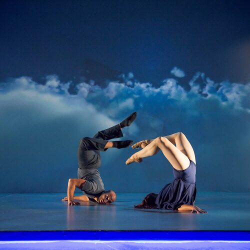

CONTEMPORERY
Techniky tance
Taneční technika a pohybová filozofie v současné podobě tance může
zahrnovat balet, improvizační tanec, moderní taneční
styly ze Spojených států (Grahamova technika,
Humphrey-Weidmanova technika a Hortonova technika) a Evropy.
Současní tanečníci využívají moderní techniky, jako je pilates,
jóga, herecká praxe a pantomima. Někteří dobře známí choreografové a tvůrci
současného tance si vytvořili školy a techniky vlastní.
